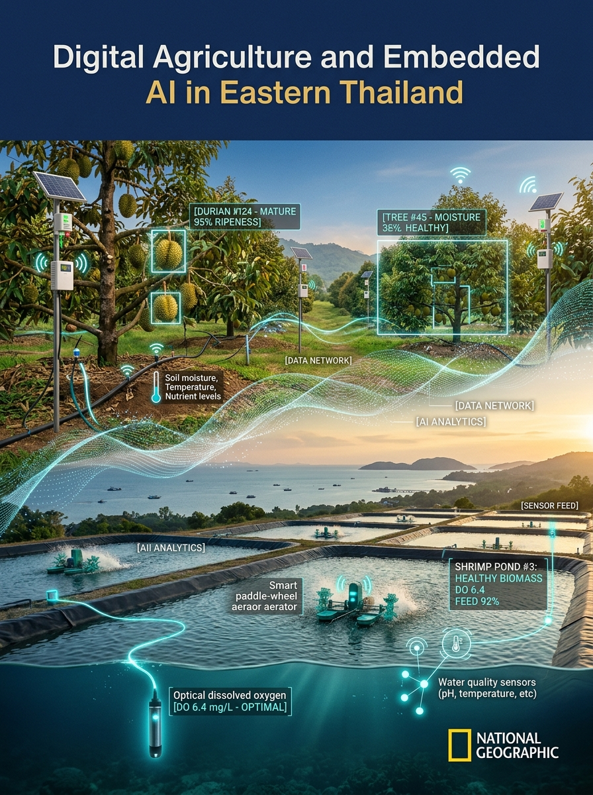

คณะวิทยาศาสตร์และเทคโนโลยี มหาวิทยาลัยราชภัฏรำไพพรรณี
โครงการพัฒนาทักษะวิชาชีพชั้นสูงเพื่อการขับเคลื่อนเศรษฐกิจฐานนวัตกรรม (AIoT 2570)
หลักสูตรเกษตรดิจิทัล
และปัญญาประดิษฐ์ฝังตัว
สวนผลไม้มูลค่าสูงและการเพาะเลี้ยงสัตว์น้ำชายฝั่ง ภาคตะวันออก
Digital Agriculture and Embedded Artificial Intelligence Curriculum
ผู้ช่วยศาสตราจารย์ ดร.ชีวะ ทัศนา (ผู้นิพนธ์หลัก และบรรณาธิการ)
ร่วมกับคณะวิทยากรผู้เชี่ยวชาญ คณะวิทยาศาสตร์และเทคโนโลยี 8 ท่าน
สำนักพิมพ์มหาวิทยาลัยราชภัฏรำไพพรรณี • พ.ศ. 2570

โครงสร้างหลักสูตร 60 ชั่วโมง
แผนผังหลักสูตรและ 10 โมดูลการเรียนรู้ภาคสนาม
การบูรณาการองค์ความรู้ฟิสิกส์เกษตร วิศวกรรมไฟฟ้ากำลัง และสมองกลปัญญาประดิษฐ์
CURRICULUM ROADMAP
ส่วนที่ 1 : สวนผลไม้มูลค่าสูง (ทุเรียน มังคุด สละ)
- บทที่ 1 : ฟิสิกส์เกษตรและสถาปัตยกรรม Edge AI ฝังตัว
- บทที่ 2 : อิเล็กทรอนิกส์กำลังและการขับมอเตอร์ปั๊มน้ำกำลังสูง
- บทที่ 3 : ชลศาสตร์ท่อในสวนผลไม้และสมดุลการคายระเหยน้ำ
- บทที่ 4 : การประเมินความสุกทุเรียนด้วยเสียงเคาะและคอมพิวเตอร์วิทัศน์
- บทที่ 5 : การตรวจจับโรคใบและผลผลิตด้วย Edge AI แบบเรียลไทม์
ส่วนที่ 2 : การเพาะเลี้ยงสัตว์น้ำชายฝั่ง (กุ้งขาว ปลากะพง)
- บทที่ 6 : ฟิสิกส์การละลายของออกซิเจนและเซนเซอร์เคมีน้ำแม่นยำ
- บทที่ 7 : การควบคุมเครื่องเติมอากาศด้วยอินเวอร์เตอร์ VFD ประหยัดพลังงาน
- บทที่ 8 : การวิเคราะห์พฤติกรรมการกินอาหารกุ้งด้วยเสียงใต้น้ำและ AI
- บทที่ 9 : การพัฒนาและ Optimize โมเดล AI บน Edge Device ขนาดเล็ก
- บทที่ 10 : ระบบสื่อสาร LoRaWAN พลังงานแสงอาทิตย์ และเกตเวย์อุตสาหกรรม
OBE Standard: ทุกโมดูลมุ่งเน้นการลงมือปฏิบัติการจริง ณ แปลงทดสอบทุเรียนและฟาร์มเพาะเลี้ยงสัตว์น้ำภาคตะวันออก
บทที่ 1 • ทฤษฎีรากฐาน
ฟิสิกส์เกษตรและการเปลี่ยนผ่านสู่ Edge AI ฝังตัว
การเอาชนะข้อจำกัดของโครงข่ายสัญญาณคลาวด์ด้วยการประมวลผลหน้างาน 100%
CHAPTER 01 : FOUNDATION
ความท้าทายของเกษตรกรรมชายฝั่งภาคตะวันออก
- สัญญาณมือถือ 4G/5G ขาดหายในพื้นที่หุบเขาและบ่อเพาะเลี้ยงริมทะเล
- ค่าหน่วงเวลา (Latency) สูงเกิน 2,000 ms เสี่ยงต่อการสั่งตัดปั๊มน้ำไม่ทัน
- ค่าเช่าคู่สายและแบนด์วิดท์คลาวด์สะสมสูงถึงหลักหมื่นบาทต่อเดือน
- ความชื้นสัมพัทธ์สูงกว่า 85% RH และไอน้ำเค็มกัดกร่อนแผงวงจร
กระบวนทัศน์ Edge Computing ฝังตัว
- Zero-Cloud Latency : อนุมานผลตรวจวัดหน้างานภายในเวลา < 50 ms
- Offline Autonomy : ระบบตัดสินใจเปิด-ปิดเครื่องจักรได้แม้เน็ตหลุด 100%
- Bandwidth Optimization : ส่งเฉพาะ Metadata หรือรหัสเตือนภัยผ่าน LoRaWAN
- Data Privacy & Sovereignty : ข้อมูลผลผลิตเป็นกรรมสิทธิ์ของเกษตรกรเต็มตัว
สถาปัตยกรรม 3 ระดับ: Sensing Physical Layer → Edge Embedded Intelligence → Industrial Action Layer
บทที่ 1 • แพลตฟอร์มฮาร์ดแวร์
การคัดเลือกสมองกลฝังตัวและโปรไฟล์พลังงาน
การเปรียบเทียบ MCU, NPU และ Single-Board Computer สำหรับงานฟาร์มสมาร์ท
CHAPTER 01 : HARDWARE SPECS
ตารางเปรียบเทียบคุณลักษณะทางเทคนิคและสมรรถนะ
| ชิป / บอร์ด | กำลังคำนวณ (TOPS) | การใช้พลังงาน | งานที่เหมาะสม |
|---|---|---|---|
| ESP32-S3 | 0.01 (Vector Ext) | 0.5 - 1.2 W | ตรวจวัดสภาพแวดล้อม, FFT เสียงเคาะเบื้องต้น |
| Raspberry Pi 5 | 0.1 - 0.2 (CPU) | 5.0 - 12.0 W | เกตเวย์รวบรวมข้อมูล, โหนดบันทึกภาพแปลง |
| K210 / Luckfox | 0.5 - 1.0 (NPU) | 1.0 - 2.5 W | จำแนกโรคพืช, ตรวจจับคน/ศัตรูพืชเบื้องต้น |
| Jetson Orin Nano | 20 - 40 (Tensor Core) | 7.0 - 15.0 W | YOLO Real-time วิเคราะห์กุ้ง 30 FPS |
เกณฑ์การตัดสินใจภาคสนาม
- จุดโหนดตรวจวัดในสวน : ESP32-S3 โซลาร์เซลล์ 10W
- สถานีตรวจคัดแยกทุเรียน : Jetson Orin Nano ต่อไฟบ้าน
- สถานีควบคุมบ่อกุ้ง : Industrial ESP32 + Modbus RTU
ข้อควรจำ: การใช้พลังงานสัมพันธ์โดยตรงกับขนาดแบตเตอรี่และแผงโซลาร์เซลล์ที่ต้องติดตั้งในสวน
บทที่ 2 • ฮาร์ดแวร์กำลังสูง
อิเล็กทรอนิกส์กำลังและการขับมอเตอร์ปั๊มน้ำขนาดใหญ่
หลักการควบคุม Magnetic Contactor, Solid-State Relay และการป้องกันขดลวดเหนี่ยวนำ
CHAPTER 02 : POWER ELECTRONICS
ปัญหา Back-EMF จากโหลดเหนี่ยวนำ (Inductive Load)
- เมื่อตัดกระแสจากขดลวดรีเลย์หรือคอยล์แมกเนติก จะเกิดแรงดันต้านกลับสูง
- แรงดันพุ่งสูงตามสมการฟิสิกส์:
V_L = - L × (di / dt)
- แรงดันเหนี่ยวนำสามารถพุ่งสูงเกิน 300 - 800 โวลต์
- ส่งผลให้ทรานซิสเตอร์ขับ (MOSFET / BJT) ทะลุเสียหายในเสี้ยววินาที
วงจรป้องกัน Flyback Diode และ RC Snubber
- Flyback Diode : ต่อขนานย้อนกลับคร่อมคอยล์รีเลย์ DC (เช่น เบอร์ 1N4007 หรือ Schottky 1N5819)
- RC Snubber Circuit : ต่อคร่อมหน้าสัมผัส AC รีเลย์เพื่อดูดซับประกายไฟและสัญญาณรบกวนความถี่สูง (R = 100 Ω, C = 0.1 μF 630V)
- Varistor (MOV) : ตัดแรงดัน Surge ชั่วขณะที่เกิน 275 VAC
คำเตือนความปลอดภัย: ห้ามต่อขาเอาต์พุต GPIO ของไมโครคอนโทรลเลอร์เข้ากับคอยล์รีเลย์โดยตรงเด็ดขาด
บทที่ 2 • ความปลอดภัยไฟฟ้า
การแยกกราวด์ Opto-Isolation และระบบต่อลงดินอุตสาหกรรม
เทคนิคการป้องกันไมโครคอนโทรลเลอร์แฮงก์จากคลื่นรบกวน EMI ของมอเตอร์ 3 เฟส
CHAPTER 02 : ISOLATION & GROUND
1. Optocoupler Isolation
- แยกวงจรตรรกะ 3.3V ออกจากวงจรกำลัง 24V/220V ด้วยแสง
- ใช้ชิป PC817 หรือ TLP281 ป้องกันไฟกระชากย้อนเข้า MCU
- ระยะห่างทางกายภาพ (Creepage Distance) > 6 มม.
2. การแยกกราวด์ (Star Ground)
- แยก Signal Ground (GND_D) ออกจาก Power Ground (GND_P)
- ห้ามลูปสายกราวด์เป็นวงกลม (Ground Loop) เพื่อลดการเหนี่ยวนำ EMI
- รวมกราวด์ที่จุดเดียว (Single-point grounding)
3. หลักดินมาตรฐาน กฟภ.
- ตอกแท่งหลักดินทองแดงยาว 2.40 เมตร เส้นผ่านศูนย์กลาง 16 มม.
- ค่าความต้านทานดินต้องต่ำกว่า 5 โอห์ม (Ω)
- ต่อสายเฟอร์ไรต์บีดและบายพาสแคป 0.1 μF ทุกจุดจ่ายไฟ
สรุปหัวใจสำคัญ: สัญญาณรบกวนมอเตอร์เป็นสาเหตุอันดับหนึ่งที่ทำให้ไมโครคอนโทรลเลอร์รีเซ็ตตัวเองหน้างาน
บทที่ 3 • ชลศาสตร์สวนผลไม้
การคำนวณการสูญเสียแรงดันในท่อและสมการ Darcy-Weisbach
การออกแบบระบบจ่ายน้ำสปริงเกลอร์ทุเรียนบนพื้นที่ลาดชันภูเขาจันทบุรี-ระยอง
CHAPTER 03 : HYDRAULICS
สมการการสูญเสียหลัก (Major Friction Loss)
การสูญเสียเฮดเนื่องจากความเสียดทานผิวท่อ คำนวณจากสมการ Darcy-Weisbach:
h_f = f × (L / D) × (v² / 2g)
- f : สัมประสิทธิ์ความเสียดทาน (คำนวณจาก Reynolds No. และความขรุขระท่อ)
- L : ความยาวท่อเมน (เมตร)
- D : เส้นผ่านศูนย์กลางภายในท่อ (เมตร)
- v : ความเร็วการไหลของน้ำ (ไม่ควรเกิน 1.5 - 2.0 m/s)
การสูญเสียรอง (Minor Losses) และผลต่างระดับ
การสูญเสียที่เกิดจากข้องอ ข้อแยก และวาล์ว:
h_m = ∑ K_L × (v² / 2g) | H_total = H_static + h_f + h_m + H_nozzle
- สวนทุเรียนเนินเขาต้องบวก Static Head ตามความชันภูมิประเทศ (10 ม. = 1 บาร์)
- หัวสปริงเกลอร์ทุเรียนต้องการแรงดันคงที่ 1.5 - 2.0 บาร์ ที่ปลายสาย
- ถ้าท่อเล็กเกินไป แรงดันตก ปลายสวนจะได้รับน้ำไม่สม่ำเสมอ ผลผลิตร่วง
สูตรใช้งานช่าง: สมการ Hazen-Williams มักใช้คำนวณท่อ PVC สะดวกสำหรับน้ำอุณหภูมิปกติ (C = 150)
บทที่ 3 • การให้น้ำแม่นยำ
การคายระเหยน้ำ Penman-Monteith และเซนเซอร์วัดความชื้นดิน
การให้น้ำตามความต้องการจริงของต้นทุเรียนในแต่ละระยะการพัฒนาของผลผลิต
CHAPTER 03 : EVAPOTRANSPIRATION
สมการสมดุลน้ำ FAO-56 Penman-Monteith
ET_c = K_c × ET_0
- ET_0 : อัตราการคายระเหยอ้างอิง คำนวณจากรังสีดวงอาทิตย์ อุณหภูมิ ลม และความชื้นสัมพัทธ์
- K_c : ค่าสัมประสิทธิ์พืชประจำระยะต้นทุเรียน (ระยะแตกใบอ่อน = 0.85, ระยะขยายผล = 1.05 - 1.15)
- ปริมาณน้ำที่ต้องให้ (ลิตร/ต้น/วัน) :
Volume = ET_c × Canopy Area (m²) × Efficiency
การตรวจวัดความชื้นดินด้วยเซนเซอร์ความจุไฟฟ้า (Capacitive)
- หลีกเลี่ยงเซนเซอร์วัดความต้านทานแบบเข็มโลหะเปลือย (เป็นสนิมและสึกกร่อนเร็ว)
- ใช้เซนเซอร์ Capacitive Frequency Domain (FDR / TDR) วัดค่าไดอิเล็กทริกดิน
- ติดตั้ง 2 ระดับความลึก: 20 ซม. (รากหากินผิวดิน) และ 50 ซม. (ความชื้นสะสมลึก)
- ควบคุมความชื้นให้อยู่ระหว่าง Field Capacity (FC) และไม่แตะ Wilting Point (WP)
เคล็ดลับวิชาการ: ระยะกักน้ำทำดอกทุเรียน ต้องปล่อยให้ดินแห้งที่แรงดึงน้ำ > 40-50 kPa นาน 10-14 วัน
บทที่ 4 • การคัดแยกความสุก
ฟิสิกส์คลื่นเสียงเคาะทุเรียนและการแปลงสัญญาณ FFT
การวิเคราะห์ความถี่ธรรมชาติ (Natural Frequency) เพื่อแยกทุเรียนแก่-ทุเรียนอ่อนอย่างแม่นยำ
CHAPTER 04 : ACOUSTIC PHYSICS
หลักการสั่นพ้องเชิงกลและช่องว่างระหว่างพู
- เมื่อทุเรียนแก่จัด เนื้อจะหดตัวเล็กน้อยและเกิดช่องอากาศระหว่างเปลือกกับเนื้อ
- ความหนาแน่นและค่ามอดูลัสความยืดหยุ่นยังผล (Effective Elastic Modulus) ลดลง
- ความถี่สั่นพ้องเรโซแนนซ์หลัก (Fundamental Frequency f_0) จะเลื่อนลงต่ำ:
f_0 = (1 / 2π) × √( k_eff / m_eff )
- ทุเรียนอ่อน : เสียงเคาะแน่นทึบ ความถี่พุ่งสูง > 450 - 650 Hz
- ทุเรียนแก่สมบูรณ์ : เสียงเคาะโปร่งกังวาน ความถี่ลดต่ำลงมาที่ 220 - 320 Hz
กระบวนการสกัดคุณลักษณะเสียงเคาะ (Digital Signal Pipeline)
- รับสัญญาณ : ไมโครโฟนคอนเดนเซอร์ MEMS หรือ Piezo Pickup ความถี่สุ่ม 44.1 kHz
- Bandpass Filter : กรองตัดย่านเสียงรบกวนภายนอกคงเหลือ 100 Hz - 1,000 Hz
- FFT Windowing : นำสัญญาณ 2,048 จุดคำนวณผ่าน Hanning Window
- Peak Detection & Damping Ratio : สกัดค่าความถี่สูงสุดและอัตราการสลายตัวของคลื่น (ζ)
การนำไปใช้: ผสานค่า Peak Frequency และ Damping เข้ากับ Machine Learning Classifier (SVM / Random Forest)
บทที่ 4 • การมองเห็นของคอมพิวเตอร์
คอมพิวเตอร์วิทัศน์คัดแยกเกรดและหนามทุเรียน
การวิเคราะห์รูปทรงพู สัณฐานวิทยาหนาม และสีร่องเปลือกด้วย Edge AI Camera
CHAPTER 04 : COMPUTER VISION
1. พื้นที่สี HSV / Lab
- แปลงจาก RGB เป็น HSV เพื่อขจัดผลกระทบจากแสงเงาแดดธรรมชาติ
- วัดค่าสีร่องหนาม: ทุเรียนแก่จะมีร่องสีน้ำตาลแกมเหลืองชัดเจน
- คำนวณดัชนี Brown-to-Green Ratio
2. สัณฐานวิทยาปลายหนาม
- วิเคราะห์ความโค้งงอของปลายหนาม (Thorn Tip Curvature)
- หนามทุเรียนแก่จะแห้งหดตัว ปลายหนามกางออกและแข็งกรอบ
- ใช้วิธี Edge Contours & Morphological Skeleton
3. การคัดขนาดเกรดส่งออก
- วัดสัดส่วนพูสมบูรณ์ 4-5 พู เพื่อจัดเกรด A, B, C, โบ้
- คำนวณปริมาตรผล 3 มิติโดยประมาณจากกล้อง Stereo Depth
- ความเร็วการคัดแยกบนสายพาน > 1 ผลต่อวินาที
ผลลัพธ์การทดสอบ: โมเดลคอมพิวเตอร์วิทัศน์ผสานเสียงเคาะ (Multimodal Fusion) ให้ความแม่นยำสูงถึง 94.8%
บทที่ 5 • สุขภาพพืช
การตรวจจับโรคใบและผลทุเรียนด้วย Edge AI แบบเรียลไทม์
การวินิจฉัยเชื้อราไฟทอปธอรา เพลี้ยไก่แจ้ และโรคใบติดในระยะเริ่มต้น
CHAPTER 05 : PLANT PATHOLOGY
โรคพืชสำคัญในสวนทุเรียนภาคตะวันออก
- โรคราเน่าคอดิน/ผลเน่า (Phytophthora palmivora) : ลุกลามเร็วมาก ทำลายผลผลิตเสียหายทั้งต้น
- โรคใบติด (Rhizoctonia solani) : ระบาดหนักช่วงฝนชุก ใบแห้งไหม้ติดกันด้วยเส้นใยรา
- โรคแอนแทรคโนส (Colletotrichum gloeosporioides) : แผลจุดสีน้ำตาลไหม้บนใบและผล
- การเข้าทำลายของเพลี้ยไก่แจ้และเพลี้ยไฟ : ใบหงิกงอ ยอดแห้ง ชะงักการเจริญเติบโต
การทำงานของโมเดล Object Detection หน้างาน
- ภาพจากกล้องส่องตรวจแปลง (Handheld / ติดรถตัดหญ้าอัตโนมัติ)
- โมเดล YOLOv8-Nano / MobileNetV3-SSD ตรวจจับรอยโรค
- แสดงกล่อง Bounding Box พร้อมระบุชนิดโรคและระดับความรุนแรง
- แจ้งพิกัด GPS ตำแหน่งต้นที่พบโรคไปยังสมาร์ทโฟนของชาวสวนทันที
การระบุโรคระยะเริ่มต้น: ช่วยลดการฉีดพ่นสารเคมีแบบเหวี่ยงแห ประหยัดค่ายาได้มากกว่า 45%
บทที่ 5 • ประเมินผลโมเดล
เมทริกซ์การวัดผล Confusion Matrix ในสภาพแปลงจริง
การวิเคราะห์ค่า Precision, Recall, F1-Score เมื่อเผชิญแสงแดดและฝุ่นละออง
CHAPTER 05 : AI VALIDATION
ผลการทดสอบโมเดลคัดแยกโรคบนชุดทดสอบแปลงทุเรียนจันทบุรี (500 ภาพ)
| คลาสโรค | Precision | Recall | F1-Score | ข้อสังเกตหน้างาน |
|---|---|---|---|---|
| ใบปกติ (Healthy) | 0.96 | 0.98 | 0.97 | ตรวจจับได้แม่นยำสูงมาก |
| ไฟทอปธอรา (Phytophthora) | 0.93 | 0.91 | 0.92 | แผลฉ่ำน้ำสีน้ำตาลเข้มจำแนกชัดเจน |
| ใบติด (Rhizoctonia) | 0.89 | 0.87 | 0.88 | อาจสับสนกับใบไหม้แดดจัดตอนเที่ยง |
| เพลี้ยไฟ (Thrips damage) | 0.86 | 0.84 | 0.85 | รอยแผลขนาดเล็ก ต้องใช้ความละเอียดภาพสูง |
| เฉลี่ยถ่วงน้ำหนัก (mAP@50) | 0.915 | 0.902 | 0.908 | ผ่านเกณฑ์มาตรฐานการใช้งานจริง |
ข้อพิจารณา Trade-off
- High Recall ในงานโรคระบาด : ต้องยอมให้ False Alarm เล็กน้อย ดีกว่าหลุดรอดจนเชื้อระบาดข้ามแปลง
- Data Augmentation : เพิ่มข้อมูลภาพที่มีแสงแดดส่องย้อน เลนส์เปื้อนละอองน้ำ และมุมเอียงของใบ
สูตรการคำนวณ: F1-Score = 2 × (Precision × Recall) / (Precision + Recall)
บทที่ 6 • ฟิสิกส์การเพาะเลี้ยงสัตว์น้ำ
พลศาสตร์ออกซิเจนละลายน้ำและอัตราการถ่ายโอน O2
สมดุลการละลายของก๊าซในน้ำเค็ม อุณหภูมิ และค่าสัมประสิทธิ์ K_L a
CHAPTER 06 : WATER DYNAMICS
สมการอัตราการถ่ายโอนออกซิเจน (Oxygen Transfer Rate)
การละลายของออกซิเจนจากบรรยากาศลงสู่ผิวน้ำอธิบายโดยกฎของทูฟิล์ม (Two-Film Theory):
dC / dt = K_L a × (C* - C)
- K_L a : สัมประสิทธิ์การถ่ายโอนมวลรวมเชิงปริมาตร (hr¯¹) ขึ้นอยู่กับความเร็วรอบใบพัดตีน้ำ
- C* : ความเข้มข้นออกซิเจนอิ่มตัว ณ อุณหภูมิและความเค็มขณะนั้น (mg/L)
- C : ความเข้มข้นออกซิเจนละลายจริงในบ่อ (DO)
ความสัมพันธ์กับอุณหภูมิและความเค็มน้ำทะเล
- เมื่ออุณหภูมิน้ำสูงขึ้น ค่าความอิ่มตัว C* จะลดลงอย่างรวดเร็ว
- น้ำเค็ม (Salinity 25-30 ppt) ละลายออกซิเจนได้น้อยกว่าน้ำจืดประมาณ 15-20%
- ช่วงเวลาวิกฤต: 03:00 - 06:00 น. แพลงก์ตอนพืชและกุ้งต่างใช้ออกซิเจนหายใจ ค่า DO ตกฮวบ
- ระดับ DO ต่ำกว่า 3.5 - 4.0 mg/L กุ้งจะเริ่มเครียด ไม่กินอาหาร เสี่ยงต่อการเกิดโรค
โจทย์ความท้าทาย: ต้องควบคุมเครื่องตีน้ำให้รักษา DO ≥ 5.0 mg/L ตลอด 24 ชม. โดยไม่สิ้นเปลืองค่าไฟเกินจำเป็น
บทที่ 6 • ตรวจวัดคุณภาพน้ำ
เซนเซอร์วัดคุณภาพน้ำอุตสาหกรรมและการชดเชยค่า
การเลือกใช้ Optical DO, เซนเซอร์ค่าความเค็ม, pH และการสื่อสาร RS485 Modbus RTU
CHAPTER 06 : SENSING SUITE
1. Optical DO Sensor
- วัดการเรืองแสง (Fluorescence Quenching)
- ไม่ต้องเปลี่ยนแผ่นเมมเบรนและสารเคมีอิเล็กโทรไลต์
- ไม่ใช้ออกซิเจนในการวัด ไม่มีผลกระทบแม้น้ำนิ่ง
- อายุการใช้งานหัววัด > 1-2 ปี
2. การชดเชยอุณหภูมิ & ความเค็ม
- ติดตั้งโพรบวัดอุณหภูมิ PT1000 อัตโนมัติ
- วัดค่าการนำไฟฟ้า (EC) เพื่อคำนวณ Salinity
- ไมโครคอนโทรลเลอร์คำนวณชดเชยค่า DO ตามสูตร:
DO_corr = DO_raw × F(S, T)
3. บัสสื่อสาร RS485 Modbus
- ส่งสัญญาณ Differential สู้สัญญาณรบกวนอินเวอร์เตอร์
- เดินสายสัญญาณยาวได้ถึง 500 - 1,200 เมตร รอบคันบ่อ
- อ่านค่า DO, pH, ORP, Temp ผ่านสายคู่ตีเกลียว 1 เส้น
การบำรุงรักษา: ต้องเช็ดทำความสะอาดตะไคร่น้ำและคราบเมือกออกจากหัวเซนเซอร์สัปดาห์ละ 1 ครั้ง
บทที่ 7 • ระบบประหยัดพลังงาน
การควบคุมเครื่องตีน้ำด้วยอินเวอร์เตอร์ VFD ปรับความเร็วรอบ
การประยุกต์ใช้กฎความคล้ายคลึงของพัดลม/ปั๊ม (Affinity Laws) ลดค่าไฟฟาร์มกุ้ง
CHAPTER 07 : VFD INVERTER
กฎความคล้ายคลึงของอุปกรณ์ใบพัด (Affinity Laws)
กำลังไฟฟ้าที่มอเตอร์ใช้งาน แปรผันตามความเร็วรอบยกกำลังสาม:
P_2 / P_1 = ( N_2 / N_1 )³
- หากลดความเร็วรอบมอเตอร์ลงเหลือ 80% (40 Hz):
P_2 = (0.80)³ × P_1 = 0.512 × P_1
- ประหยัดพลังงานไฟฟ้าได้เกือบ 50% ทันที
- ในขณะที่การกวนกระแสน้ำยังคงเพียงพอให้กุ้งว่ายน้ำและรวมตะกอนกลางบ่อ
ข้อแตกต่างระหว่างขับตรง Direct-On-Line (DOL) กับ VFD
- ระบบเดิม (DOL) : กระแสสตาร์ตพุ่งสูง 6-8 เท่าของพิกัด มอเตอร์กระชาก เกียร์ทดสึกหรอเร็ว
- ระบบอัจฉริยะ (VFD) : Soft Start นุ่มนวล ปรับความถี่ 25 - 50 Hz ตามค่าออกซิเจนจริง
- สั่งการอัตโนมัติจาก Edge Controller ผ่านโปรโตคอล Modbus RTU
- ยืดอายุการใช้งานของมอเตอร์และชุดเกียร์ทดรอบได้มากกว่า 2 เท่า
จุดคุ้มทุน: ค่าไฟฟ้าคิดเป็น 50-60% ของต้นทุนการเดินเครื่องฟาร์มกุ้ง การติด VFD คืนทุนภายใน 8-14 เดือน
บทที่ 7 • ผลการทดลองจริง
อัลกอริทึม PID ควบคุม DO และผลการประหยัดพลังงาน
การเปรียบเทียบระหว่างการเปิดแช่ตลอดเวลากับการคุมลูปปิดอัตโนมัติ
CHAPTER 07 : CLOSED-LOOP PID
ข้อมูลเปรียบเทียบการใช้พลังงาน ณ บ่อกุ้งทดสอบ อ.ขลุง จ.จันทบุรี (บ่อ 4 ไร่)
| พารามิเตอร์ | ระบบเดิม (เปิดแช่ 100%) | ระบบ AIoT PID VFD | ผลต่าง / ประหยัดได้ |
|---|---|---|---|
| การใช้ไฟฟ้ารายวัน | 184.2 kWh / วัน | 118.6 kWh / วัน | - 35.6% |
| ค่าไฟฟ้าเฉลี่ยต่อเดือน | 24,867 บาท | 16,011 บาท | ประหยัด 8,856 บาท |
| ระดับ DO ต่ำสุดกลางคืน | 3.8 mg/L (ช่วงพายุนิ่ง) | 5.1 mg/L (เร่งรอบทันที) | ปลอดภัยจากกุ้งลอยหัว |
| ค่าความเสถียรของ DO | แกว่ง 3.8 - 9.4 mg/L | คงที่ 5.0 ± 0.4 mg/L | กุ้งเครียดลดลง อัตราโตดีขึ้น |
สมการควบคุม PID ในไมโครคอนโทรลเลอร์
u(t) = K_p e(t) + K_i ∫ e(t)dt + K_d (de/dt)
- เซตพอยต์ DO: 5.2 mg/L
- มีฟังก์ชัน Anti-Windup ป้องกันรอบค้าง
- ระบบเร่งรอบฉุกเฉิน 100% หากเซนเซอร์ตรวจพบ DO < 4.0 mg/L
สรุปความคุ้มค่า: ฟาร์มขนาด 10 บ่อ สามารถประหยัดค่าไฟฟ้ารวมได้มากกว่า 1,000,000 บาทต่อปี
บทที่ 8 • การให้อาหารแม่นยำ
การตรวจจับเสียงแทะอาหารกุ้งใต้น้ำ (Passive Acoustics)
การดักฟังคลื่นเสียง Click Sound ของกุ้งขาวแวนนาไมด้วย Hydrophone และ Edge AI
CHAPTER 08 : UNDERWATER SOUND
สเปกตรัมเสียงเคี้ยวอาหารของกุ้ง (Click Signals)
- เมื่อกุ้งใช้กรามฟัน (Mandibles) บดเม็ดอาหาร จะเกิดคลื่นเสียงกระแทกความถี่สูง
- ย่านความถี่เฉพาะตัว: 20 kHz ถึง 45 kHz (สูงกว่าเสียงใบพัดตีน้ำ)
- เสียงใบพัดตีน้ำบ่อกุ้งมีพลังงานหนาแน่นที่ย่านความถี่ต่ำ < 5 kHz
- สามารถใช้ตัวกรอง High-pass Analog Filter ตัดเสียงกวนจากเครื่องยนต์และมอเตอร์ทิ้งได้อย่างหมดจด
การติดตั้งไฮโดรโฟนและอัลกอริทึมนับจำนวนคลิก
- ติดตั้ง Piezoelectric Hydrophone บริเวณถาดอาหารหรือรัศมีเครื่องหว่านอาหาร 3-5 เมตร
- Sampling Rate 96 - 192 kHz ส่งเข้าชิปประมวลผล DSP / Edge AI
- อัลกอริทึมนับอัตราการคลิกต่อนาที (Clicks Per Minute: CPM)
- CPM สูง : กุ้งกำลังรุมกินอาหารอย่างหิวกระหาย → สั่งจ่ายอาหารต่อ
- CPM ต่ำลง : กุ้งเริ่มอิ่ม อาหารเหลือ → สั่งหยุดเครื่องจ่ายอาหารทันที
ข้อดีเหนือกว่าการยกยอ: รู้พฤติกรรมกุ้งได้ตลอด 24 ชั่วโมง โดยไม่ต้องใช้แรงงานคนพายเรือไปยกยอ
บทที่ 8 • ควบคุมต้นทุนอาหาร
การลดอัตราแลกเนื้อ FCR และป้องกันน้ำเสียก้นบ่อ
การบูรณาการระบบหว่านอาหารอัตโนมัติลูปปิดกับสภาวะออกซิเจนและอุณหภูมิน้ำ
CHAPTER 08 : FCR OPTIMIZATION
1. ลดค่า FCR ลงเหลือ 1.18
- เดิมค่า Feed Conversion Ratio อยู่ที่ 1.45 - 1.60
- การให้อาหารแม่นยำช่วยลด FCR ลงเหลือ 1.15 - 1.22
- ประหยัดอาหารเม็ดได้ถึง 15 - 20% ตลอดรุ่นการเลี้ยง
2. คุณภาพน้ำและก้นบ่อสะอาด
- อาหารเหลือเน่าก้นบ่อลดลงกว่า 65%
- ลดการสะสมของก๊าซพิษแอมโมเนีย (NH3) และไนไตรท์ (NO2-)
- ลดปริมาณแบคทีเรีย Vibrio ในน้ำและตับกุ้ง
3. Interlock ป้องกันอัจฉริยะ
- ล็อกการทำงานอัตโนมัติหาก DO < 4.5 mg/L
- ล็อกหากอุณหภูมิน้ำลดต่ำกว่า 26 °C (กุ้งชะงักการกิน)
- ป้องกันการเทอาหารทิ้งสูญเปล่าในยามวิกฤต
ประโยชน์เชิงเศรษฐกิจ: ค่าอาหารคิดเป็น 50-70% ของต้นทุนเลี้ยงกุ้ง การลด FCR สร้างกำไรเพิ่มขึ้นชัดเจนที่สุด
บทที่ 9 • สถาปัตยกรรม AI ฝังตัว
โครงสร้างโครงข่ายประสาทเทียมประสิทธิภาพสูง MobileNetV3 และ YOLO-Nano
การออกแบบชั้นเครือข่ายสำหรับอุปกรณ์ขอบสเปกจำกัด (Resource-Constrained Devices)
CHAPTER 09 : AI ARCHITECTURE
Depthwise Separable Convolution
เทคนิคการแยกชั้นคอนโวลูชันเพื่อลดภาระการคำนวณทางคณิตศาสตร์:
- แยกการคำนวณออกเป็น 2 ชั้น: Depthwise (กรองมิติเชิงพื้นที่) และ Pointwise 1×1 (รวมมิติเชิงช่องสัญญาณ)
- ลดจำนวน Parameter และการคูณสะสม (FLOPs) ลงได้ถึง 8 - 9 เท่า เมื่อเทียบกับ Standard Convolution
- รักษาความแม่นยำของโมเดลไว้ได้มากกว่า 95% ของโครงข่ายขนาดใหญ่
Inverted Residuals & Squeeze-and-Excitation
- Inverted Residual Block : ขยายช่องสัญญาณชั่วคราวในชั้นคอคอด (Bottleneck) เพื่อให้ฟีเจอร์ไหลผ่านได้สมบูรณ์
- SE-Block (Squeeze & Excitation) : กลไก Attention ขนาดเล็ก ช่วยเลือกถ่วงน้ำหนักเฉพาะช่องสัญญาณที่สำคัญต่อรอยโรค
- Hard-Swish Activation : ดัดแปลงสมการ Sigmoid ให้คำนวณรวดเร็วบนฮาร์ดแวร์ฝังตัวโดยไม่ต้องใช้ฟังก์ชันลอการิทึมซับซ้อน
ผลลัพธ์: โมเดลขนาดเล็กกว่า 8-15 MB สามารถรันบนชิป Cortex-A / NPU ได้อย่างลื่นไหล
บทที่ 9 • การเพิ่มประสิทธิภาพโมเดล
การทำ Model Quantization INT8 และคอมไพล์บน NPU
การบีบอัดน้ำหนักโมเดลจาก Float32 เป็น Integer 8-bit และการใช้งาน TensorRT / TFLite Micro
CHAPTER 09 : INT8 QUANTIZATION
สมการการแปลงค่า Symmetric / Asymmetric Quantization
q = round( r / S ) + Z | S = (r_max - r_min) / (q_max - q_min)
| ฟอร์แมตโมเดล | ขนาดไฟล์ (MB) | ความเร็ว Latency (ms) | การกินแรม (RAM) | ความแม่นยำ (mAP) |
|---|---|---|---|---|
| PyTorch FP32 | 46.8 MB | 185 ms | 142 MB | 91.8% |
| ONNX FP16 | 23.4 MB | 78 ms | 74 MB | 91.7% |
| INT8 Quantized (TFLite/TRT) | 11.2 MB (-76%) | 24 ms (7.7x เร็วขึ้น) | 36 MB | 91.2% (หายไป 0.6%) |
ขั้นตอน Post-Training Quantization
- ใช้ภาพตัวอย่างตัวแทน (Representative Dataset) 100-200 ภาพ
- คำนวณหาค่า Scale Factor (S) และ Zero-point (Z)
- แปลง Operation ทั้งหมดให้คำนวณบน ALU จำนวนเต็ม 8-bit
- รันอนุมานได้ > 35 FPS บนบอร์ดขอบขนาดเล็ก
บทสรุปสำคัญ: INT8 Quantization คือกุญแจสำคัญที่ทำให้โมเดล Deep Learning รันบนบอร์ดราคาประหยัดได้จริง
บทที่ 10 • โครงข่ายระยะไกล
สถาปัตยกรรมเครือข่าย LoRaWAN ย่านความถี่ AS923
การเชื่อมโยงโหนดเซนเซอร์ข้ามเนินเขาและชายฝั่ง 5 - 12 กิโลเมตร ด้วยพลังงานต่ำ
CHAPTER 10 : LORAWAN AS923
โทโพโลยี Star-of-Stars และพารามิเตอร์ส่งสัญญาณ
- ย่านความถี่มาตรฐานไทย (NBTC) : AS923 (920 - 925 MHz) กำลังส่งสูงสุด ≤ 500 mW ERP
- Chirp Spread Spectrum (CSS) : ทนทานต่อสัญญาณรบกวน ทะลุผ่านใบไม้หนาแน่นของต้นทุเรียนได้ดี
- Spreading Factor (SF) : ปรับเปลี่ยนอัตโนมัติ (ADR)
- SF7 : โหนดใกล้เกตเวย์ ใช้เวลา Time-on-Air เพียง 51.5 ms ประหยัดแบตเตอรี่สูงสุด
- SF12 : โหนดไกลหลังเขา ทะลวงสัญญาณไกลขึ้น แต่ใช้เวลาส่ง 1.48 วินาที
- เกตเวย์อุตสาหกรรม : 8 ช่องสัญญาณพร้อมกัน (SX1302/SX1303 Core) รองรับโหนด > 1,000 จุด
การเข้ารหัสความปลอดภัยระดับอุตสาหกรรม
- การเข้ารหัส 2 ชั้น (Dual-layer AES-128) :
- Network Session Key (NwkSKey) : ป้องกันความถูกต้องในระดับโครงข่าย
- Application Session Key (AppSKey) : ป้องกันข้อมูลลับของฟาร์มไม่ให้ใครดักอ่านได้
- ใช้ระบบเปิดใช้งานแบบ OTAA (Over-The-Air Activation) มีความปลอดภัยสูงสุด
- เชื่อมต่อเข้ากับ Local ChirpStack Server หรือ Edge Gateway หน้าฟาร์มได้ 100% โดยไม่ต้องพึ่งพาระบบภายนอก
ระยะครอบคลุมจริง: เกตเวย์ติดตั้งบนเสาสูง 15 เมตร ณ มรภ.รำไพพรรณี รับสัญญาณเซนเซอร์ได้ไกลข้ามตำบลถึง 10.4 กม.
บทที่ 10 • วิศวกรรมความทนทาน
มาตรฐานการป้องกันน้ำเค็ม ไอน้ำกรด และระบบป้องกันฟ้าผ่า
การออกแบบกล่องหุ้ม IP67/IP68, ซิลิโคน Conformal Coating และ Surge Protection
CHAPTER 10 : ENCLOSURE & SURGE
1. การป้องกันไอน้ำเค็มและกรด
- กล่องหุ้มมาตรฐาน Polycarbonate IP67/IP68 กัน UV
- เคลือบแผงวงจรด้วย Silicone Conformal Coating หนา 50-75 μm
- ใช้เคเบิลแกลนด์ทองเหลืองชุบนิกเกิลหรือสเตนเลส SUS316 ป้องกันการกัดกร่อนจากน้ำทะเล
2. อุปกรณ์ป้องกันฟ้าผ่าและเสิร์จ
- ติดตั้ง Surge Protection Device (SPD Class II) ที่ตู้คอนโทรล
- ใช้หลอดก๊าซ Gas Discharge Tube (GDT) และ TVS Diode คร่อมสายสัญญาณเซนเซอร์ RS485
- ติดตั้ง Coaxial Lightning Arrestor ที่ฐานสายอากาศ LoRa
3. การจัดการระบายความร้อน
- ติดตั้ง Vent Valve (Gore Membrane) ปรับสมดุลความดันภายในกล่องโดยน้ำไม่เข้า
- แผ่นระบายความร้อนอะลูมิเนียมประกบตัวถังภายนอกสำหรับชิปประมวลผลสูง
- ลดการควบแน่นของหยดน้ำภายในตู้ช่วงกลางคืน
มาตรฐานสากล: ผ่านการทดสอบ Salt Spray Test ต่อเนื่อง 96 ชั่วโมงตามมาตรฐาน ASTM B117
บทที่ 10 • พลังงานพึ่งพาตนเอง
การออกแบบระบบโซลาร์เซลล์ Off-Grid และแบตเตอรี่ LiFePO4
การคำนวณสมดุลพลังงานเพื่อความต่อเนื่องในการทำงาน (Zero Downtime) แม้ฝนตกติดต่อกัน 3 วัน
CHAPTER 10 : SOLAR PV & BATTERY
สูตรการคำนวณขนาดแผงโซลาร์และแบตเตอรี่สำรอง
E_day = P_avg × 24 | C_batt = ( E_day × N_days ) / ( V_sys × DoD × η )
- ตัวอย่างโหนดตรวจวัดในสวน :
- ใช้ไฟเฉลี่ย 1.5 W → พลังงานรายวัน = 1.5 × 24 = 36 Wh/วัน
- สำรองไฟ 3 วันฟ้าปิด (Autonomy Days = 3) → 108 Wh
- ใช้แบตเตอรี่ LiFePO4 12.8V (DoD = 80%, η = 90%) :
C_batt = 108 / (12.8 × 0.8 × 0.9) = 11.7 Ah → เลือก 12.8V 15Ah
ขนาดแผงเซลล์แสงอาทิตย์ (Peak Sun Hours = 4.2 ชม.)
P_pv = E_day / ( PSH × η_system )
- P_pv = 36 Wh / (4.2 × 0.75) = 11.4 W → ติดตั้งแผง 30W Mono-crystalline
- ใช้เครื่องประจุชาร์จเจอร์ประสิทธิภาพสูงแบบ MPPT (Maximum Power Point Tracking)
- ข้อดีของ LiFePO4 : วงจรรอบชาร์จ > 3,000 รอบ ทนความร้อนแปลงเกษตรได้ถึง 60 °C ปลอดภัยไม่ระเบิด
- โหมดประหยัดพลังงาน: ให้ MCU เข้าสู่ Deep Sleep ตื่นมาอ่านค่าและส่งข้อมูลทุก 15 นาที
ผลการทดสอบ: อุปกรณ์สามารถจ่ายไฟทำงานต่อเนื่องข้ามฤดูมรสุมภาคตะวันออกได้ 100% โดยไม่ต้องพึ่งพาคนดูแล
การประเมินสมรรถนะ
โครงสร้างคลังข้อสอบ Pre-Test และ Post-Test 40 ข้อ
การวัดผลสัมฤทธิ์ทางการเรียนตามกรอบมาตรฐาน Bloom's Taxonomy และการฝึกปฏิบัติการ
ASSESSMENT MATRIX (40 ITEMS)
ตารางกระจายข้อสอบตามระดับพุทธิพิสัยและ 10 บทเรียน
| กลุ่มโมดูล | จำนวนข้อ | ระดับพุทธิพิสัย (Bloom's Taxonomy) | หัวข้อประเมินสำคัญ |
|---|---|---|---|
| บทที่ 1-2 : ฮาร์ดแวร์และไฟฟ้ากำลัง | 8 ข้อ | ความจำ, ความเข้าใจ, ประยุกต์ใช้ | Edge AI vs Cloud, Opto-isolation, Snubber, Flyback Diode |
| บทที่ 3-5 : สวนผลไม้และการคัดสุก | 12 ข้อ | ประยุกต์ใช้, วิเคราะห์, ประเมินค่า | Darcy-Weisbach, Penman-Monteith, FFT เสียงเคาะ, YOLO รอยโรค |
| บทที่ 6-8 : สัตว์น้ำและการควบคุม | 12 ข้อ | ประยุกต์ใช้, วิเคราะห์, แก้ปัญหา | KLa การละลาย O2, VFD Affinity Law, เสียงแทะกุ้ง, ลด FCR |
| บทที่ 9-10 : การ Optimize และไอโอที | 8 ข้อ | ประยุกต์ใช้, สร้างสรรค์, ออกแบบ | INT8 Quantization, LoRaWAN AS923, IP68, LiFePO4 Solar |
| รวมทั้งหมด | 40 ข้อ | ครบทุกระดับขั้นการเรียนรู้ | เกณฑ์ผ่าน Post-Test ≥ 75% |
ระบบสอบและเฉลยละเอียด
- ไฟล์ข้อมูลข้อสอบมาตรฐาน:
cmu_pretest_40.json - มีคำอธิบายเฉลยทางฟิสิกส์และวิศวกรรมทุกข้ออย่างละเอียด
- ประเมินทักษะปฏิบัติหน้างาน (Skill Matrix) แยกอีก 5 ฐานการทดลอง
มาตรฐาน RBRU: พัฒนาขึ้นเพื่อรับรองคุณวุฒิวิชาชีพนวัตกรเกษตรดิจิทัลและปัญญาประดิษฐ์ฝังตัว
อุปกรณ์และฐานปฏิบัติการ
ชุดทดลองปฏิบัติการและสถานีภาคสนามจริง
การฝึกอบรมแบบ Hand-on Experience บนอุปกรณ์มาตรฐานอุตสาหกรรม
LABORATORY STATIONS
ฐานที่ 1 : Power & Motor
- ตู้คอนโทรลเลอร์ 3 เฟสจำลอง
- อินเวอร์เตอร์ VFD 2.2 kW
- แมกเนติก & โอเวอร์โหลดรีเลย์
- สโคปวัดคลื่น Transient & EMI
ฐานที่ 2 : Orchard Hydraulics
- ระบบท่อ PVC ใสพร้อมเกจวัด
- ปั๊มหอยโข่งปรับความเร็วรอบ
- เซนเซอร์วัดความชื้นดิน FDR
- สถานีวัดสภาพอากาศคายระเหย
ฐานที่ 3 : Durian Acoustic AI
- เครื่องเคาะสปริงมาตรฐาน
- ไมโครโฟน MEMS & Piezo
- จอแสดงผล FFT สเปกตรัมสด
- ชุดกล้องจำแนกเกรดหนาม
ฐานที่ 4 : Aquaculture Testbed
- บ่อทดสอบจำลองน้ำเค็ม 25 ppt
- Optical DO & Multiparameter
- ไฮโดรโฟนตรวจเสียงใต้น้ำ
- เครื่องตีน้ำใบพัดปรับสปีดได้
สถานที่ฝึกปฏิบัติการ: ศูนย์วิจัยฟิสิกส์เกษตรดิจิทัล คณะวิทยาศาสตร์และเทคโนโลยี มรภ.รำไพพรรณี
พิมพ์เขียวระบบ
พิมพ์เขียวสถาปัตยกรรมระบบฟาร์มอัจฉริยะแบบครบวงจร
การเชื่อมโยงระบบเซนเซอร์ ระบบปัญญาประดิษฐ์ฝังตัว และระบบควบคุมเครื่องจักร
OPERATIONAL BLUEPRINT
ผังลำดับชั้นการส่งต่อข้อมูลและการตัดสินใจ (Hierarchical Control Flow)
คุณสมบัติเด่นของพิมพ์เขียวนี้
- Fail-Safe Design : มีระบบ Hardware Interlock และ Watchdog Timer รีเซ็ตตัวเองหากแฮงก์
- Modular Expansion : สามารถเพิ่มโหนดเซนเซอร์ได้ไม่จำกัดผ่านโครงข่าย LoRaWAN
- Low Maintenance : ออกแบบให้เกษตรกรดูแลรักษาได้เองโดยไม่ต้องพึ่งพาช่างเทคนิคจากส่วนกลาง
สิทธิประโยชน์: แพลตฟอร์มนี้เปิดเป็น Open Architecture เพื่อให้เกษตรกรในท้องถิ่นนำไปต่อยอดได้อิสระ
ผลกระทบทางเศรษฐกิจ
ความคุ้มค่าทางเศรษฐศาสตร์และระยะเวลาคืนทุน (ROI)
การวิเคราะห์ผลตอบแทนจากการลงทุนสำหรับแปลงสวนทุเรียน 25 ไร่ และฟาร์มกุ้ง 10 บ่อ
ECONOMIC FEASIBILITY
การวิเคราะห์ผลตอบแทนทางการเงินต่อรอบการผลิต
| รายการประเมิน | กรณีสวนทุเรียนส่งออก (25 ไร่) | กรณีฟาร์มกุ้งขาวแวนนาไม (10 บ่อ) |
|---|---|---|
| เงินลงทุนระบบ AIoT เริ่มต้น | 185,000 บาท | 320,000 บาท |
| ต้นทุนที่ประหยัดได้ต่อปี | ค่าน้ำ/ปุ๋ย/สารเคมี ลดลง 115,000 บาท | ค่าไฟฟ้า + ค่าอาหาร ลดลง 480,000 บาท |
| มูลค่าผลผลิตที่เพิ่มขึ้น | ทุเรียนเกรด A เพิ่มขึ้น 18% (~ 340,000 บาท) | อัตรารอดกุ้งเพิ่มขึ้น 12% (~ 420,000 บาท) |
| ผลประโยชน์สุทธิต่อปี | 455,000 บาท / ปี | 900,000 บาท / ปี |
| ระยะเวลาคืนทุน (Payback Period) | ประมาณ 4.8 เดือน (ในฤดูกาลแรก) | ประมาณ 4.3 เดือน (2 รอบการเลี้ยง) |
ผลประโยชน์ที่ประเมินค่าเป็นเงินไม่ได้
- ลดความเสี่ยง : ป้องกันความเสียหายเฉียบพลันจากไฟดับ ปั๊มไหม้ หรือกุ้งลอยหัวขาดออกซิเจน
- คุณภาพชีวิต : เกษตรกรไม่ต้องตื่นกลางดึกเพื่อเดินเปิด-ปิดวาล์วหรือขับเรือเช็กยอ
- สิ่งแวดล้อม : ลดการปล่อยน้ำเสียลงสู่แม่น้ำจันทบุรีและอ่าวไทยตอนบน
ข้อสรุปทางการเงิน: เทคโนโลยี Edge AIoT มีความคุ้มค่าสูงมาก และคืนทุนทั้งหมดได้ภายในปีแรกของการติดตั้ง
ทิศทางในอนาคต
ทิศทางการพัฒนาต่อยอดและการขับเคลื่อนพื้นที่ EEC
การบูรณาการ Generative AI, หุ่นยนต์อัตโนมัติ และระบบตรวจสอบย้อนกลับคาร์บอนเครดิต
FUTURE INNOVATIONS
1. Small Language Models (SLM)
- ติดตั้งโมเดลภาษาขนาดเล็ก (เช่น Gemma 2B / Llama-3-Nano) บนเกตเวย์ขอบ
- เกษตรกรสามารถคุยสอบถามปัญหาศัตรูพืชด้วยเสียงภาษาไทยหน้างาน
- แนะนำปริมาณปุ๋ยและยาตามสภาพอากาศเฉพาะแปลงโดยไม่ต้องต่อเน็ต
2. Autonomous Agri-Robotics
- รถตัดหญ้าและฉีดพ่นยากำจัดแมลงอัตโนมัติควบคุมด้วย RTK-GPS
- เรือกวนตะกอนและดูดเลนใต้น้ำควบคุมด้วย AI วิเคราะห์ภาพ
- โดรนสำรวจสุขภาพแปลงพืชผสานกล้อง Multispectral
3. Carbon & ESG Traceability
- บันทึกการลดใช้พลังงานไฟฟ้าและน้ำมันลงสู่ Blockchain แบบโปร่งใส
- สร้าง Carbon Credit รับรองมาตรฐานผลไม้รักษ์โลกเพื่อการส่งออกสหภาพยุโรป
- ระบบ Digital Product Passport สำหรับทุเรียนพรีเมียมจันทบุรี
เป้าหมายยุทธศาสตร์: ยกระดับภาคเกษตรกรรมภาคตะวันออกสู่เกษตรกรรมอัจฉริยะมาตรฐานระดับโลก (World-Class Smart Agri)
บทสรุป
สรุปภาพรวมหลักสูตรและเปิดเวทีแลกเปลี่ยนความคิดเห็น
หลักสูตรเกษตรดิจิทัลและปัญญาประดิษฐ์ฝังตัว คณะวิทยาศาสตร์และเทคโนโลยี มหาวิทยาลัยราชภัฏรำไพพรรณี
CONCLUSION & Q&A
ข้อคิดสำคัญในการประยุกต์ใช้เทคโนโลยี (Key Takeaways)
- ฟิสิกส์ต้องมาก่อนโค้ดดิ้ง : การเข้าใจหลักการกลศาสตร์ของไหล ไฟฟ้ากำลัง และชีววิทยา ทำให้แก้ปัญหาหน้างานได้ตรงจุด
- ความทนทานคือหัวใจ : ในสภาพแวดล้อมร้อนชื้นและไอเค็ม อุปกรณ์ต้องป้องกัน IP67/IP68 และมีระบบ Grounding ที่สมบูรณ์
- Edge AI คือคำตอบของฟาร์ม : ตัดความพึ่งพาคลาวด์ ทำงานได้อิสระ ปลอดภัย และประหยัดค่าใช้จ่ายระยะยาว
- ความคุ้มทุนที่พิสูจน์ได้ : ลดค่าไฟ ค่าอาหาร และเพิ่มสัดส่วนผลผลิตเกรดพรีเมียม คืนทุนได้ในไม่กี่เดือน
🌾 • 🦐 • 🤖
พร้อมตอบทุกข้อซักถาม
ขอขอบพระคุณผู้ทรงคุณวุฒิ คณาจารย์ และผู้เข้ารับการอบรมทุกท่าน
สำนักพิมพ์มหาวิทยาลัยราชภัฏรำไพพรรณี
ติดต่อคณะผู้จัดทำ: คณะวิทยาศาสตร์และเทคโนโลยี มหาวิทยาลัยราชภัฏรำไพพรรณี จังหวัดจันทบุรี